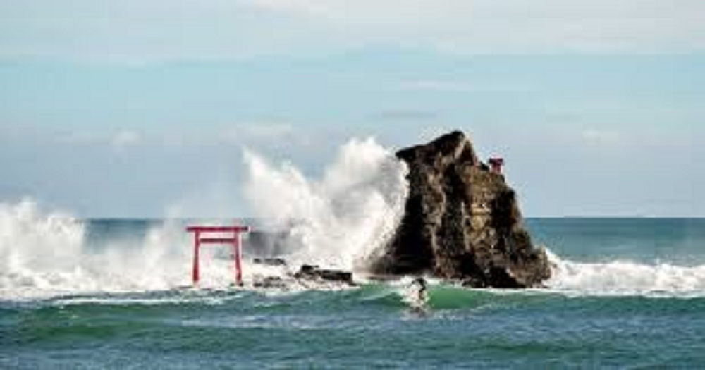
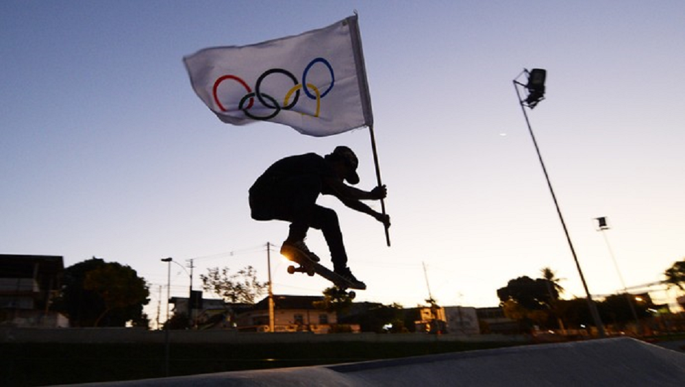
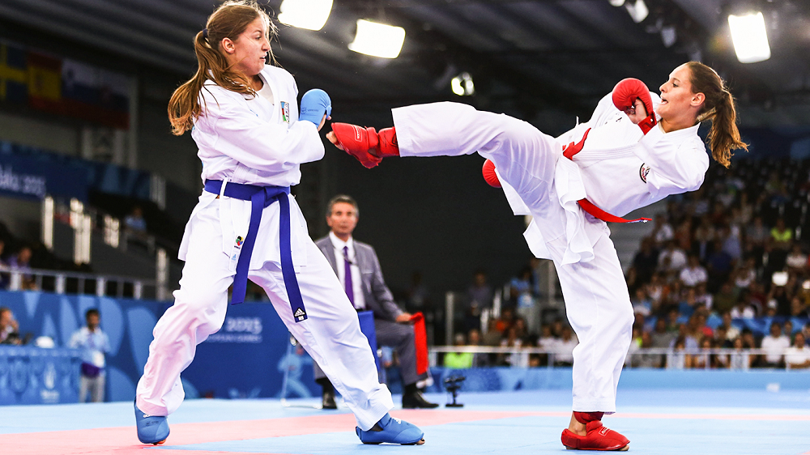
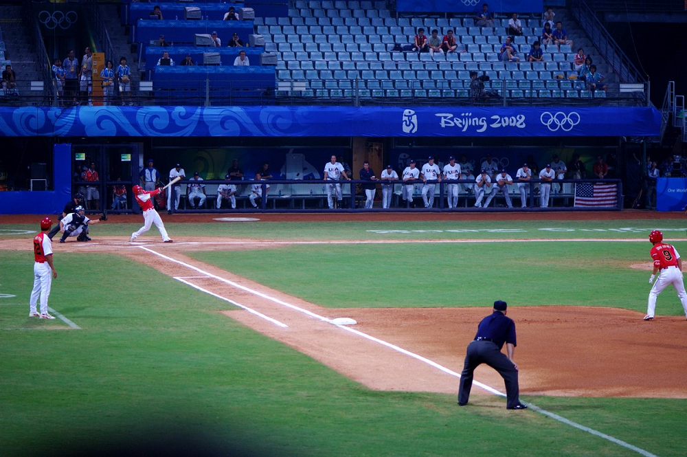
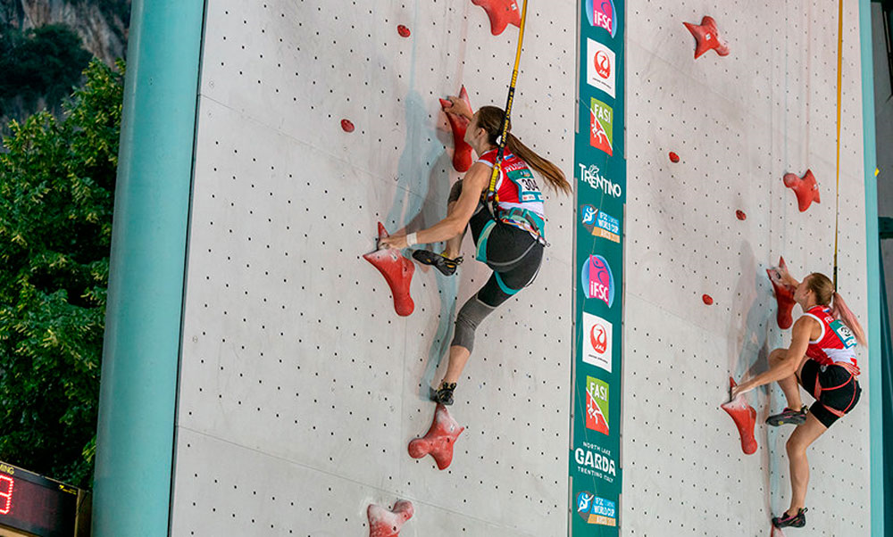

|  | O surf é uma prática desportiva efetuada na superfície da água, frequentemente considerada parte do grupo de atividades denominadas esportes de aventura, cuja proficiência é verificada pelo grau de dificuldade dos movimentos executados pelo surfista ao deslizar em pé na prancha de surfe, aproveitando a onda que quebra quando se aproxima da praia ou costa. |
|  | Skate é um esporte que consiste em deslizar sobre o solo e obstáculos equilibrando-se numa prancha, chamada também de esqueite ou skate, dotada de quatro pequenas rodas e dois eixos chamados de trucks. Com a prancha de esqueite, executam-se manobras de baixos a altos graus de dificuldade. No Brasil, o praticante de skate recebe o nome de skatista ou esqueitista, enquanto que, em Portugal, chama-se skater. O esqueitismo é considerado um esporte radical, dado seu aspecto criativo, cuja proficiência é verificada pelo grau de dificuldade dos movimentos executados. |
|  | Caratê é uma arte marcial japonesa desenvolvida a partir da arte marcial indígena de Okinawa sob influência da arte da guerra chinesa (chuan fa), das lutas tradicionais japonesas (koryu) e das disciplinas guerreiras japonesas (budō). A influência chinesa foi maior inicialmente durante o desenvolvimento, variando em um paradigma primitivo de simples luta com agarrões e projeções, para um modelo com mais ênfase em golpes traumáticos, e se fez sentir nas técnicas dos estilos mais fluidos e pragmáticos da China meridional. |
|  | Beisebol é um desporto praticado por duas equipes de nove jogadores, que alternadamente ocupam as posições de ataque e defesa.O objetivo é pontuar batendo com um bastão em uma bola lançada e depois correr pelas quatro bases do campo. Um jogador da equipe atacante pode parar em uma das bases e, depois, avançar com a ajuda da rebatida de um companheiro. Os times trocam de posição assim que três rebatedores são eliminados. Um turno de ataque e defesa de cada time representa uma entrada e nove entradas compõem um jogo profissional. O time com mais corridas no final vence. |
|  | Escalada é o esporte ou a atividade de escalar paredes de rocha, especialmente com o auxílio de cordas e equipamentos especiais. O objetivo é atingir um ponto final ou um cume de uma face rochosa ou de uma estrutura. Isso é feito utilizando equipamentos específicos, dependentes da dificuldade da escalada. É um esporte com uma exigência física elevada que combina ginástica e agilidade com o trabalho mental para executar uma ascensão ou uma travessia. |